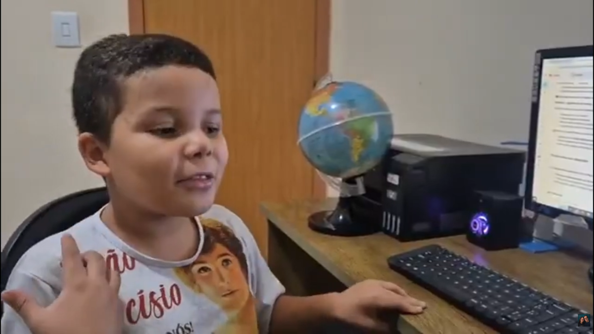

DIÁRIO DE CRIADOR
Imagine ouvir: ‘Vem jogar o que eu criei.’

‘Eu me sinto criando meus próprios jogos muito feliz, animado, para ver depois o que que vai dar.’

‘Eu me sinto criando meus próprios jogos muito feliz, animado, para ver depois o que que vai dar.’